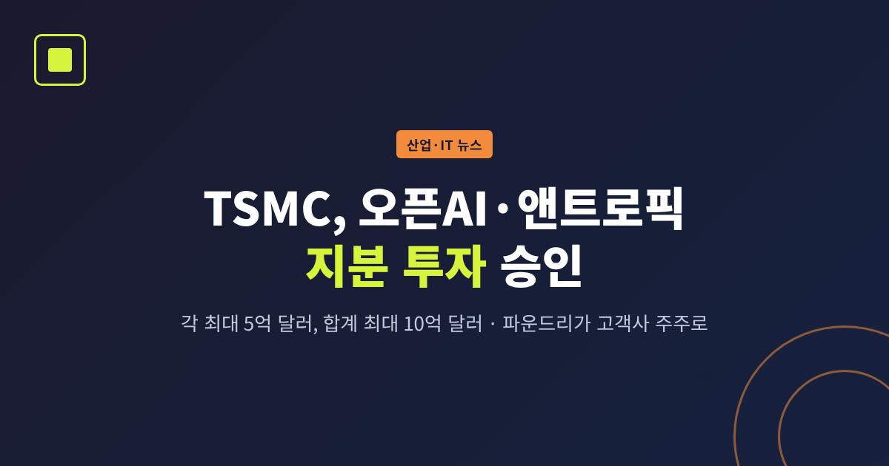
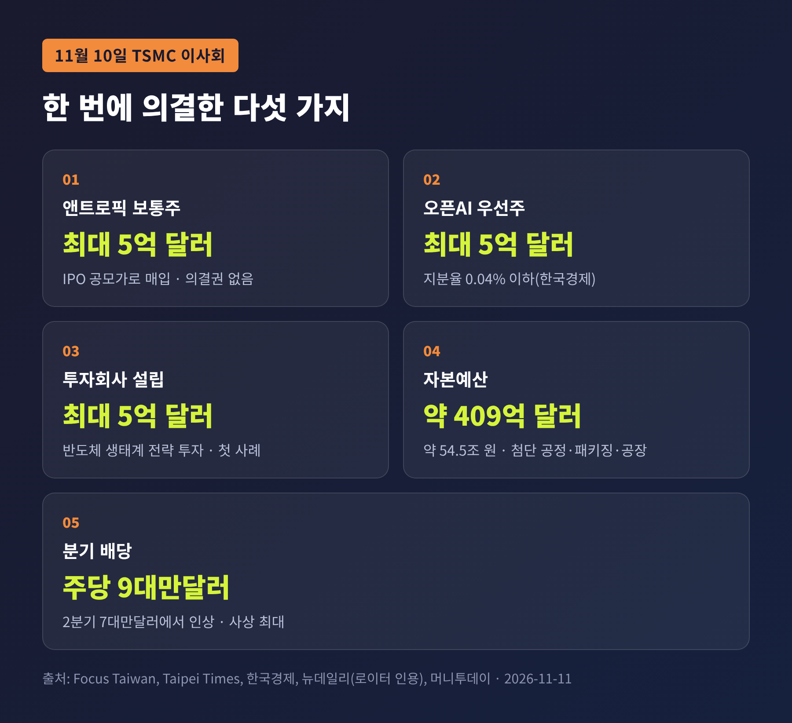
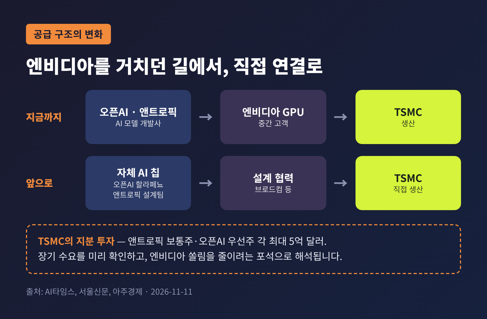
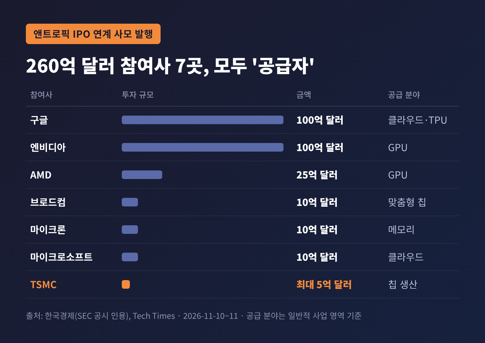
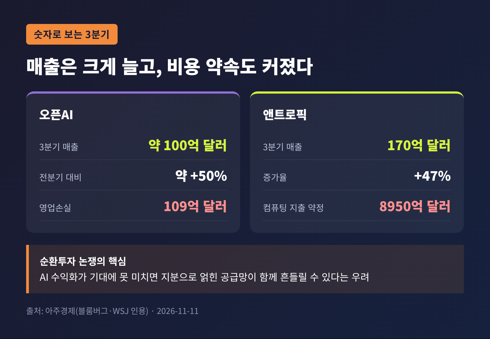
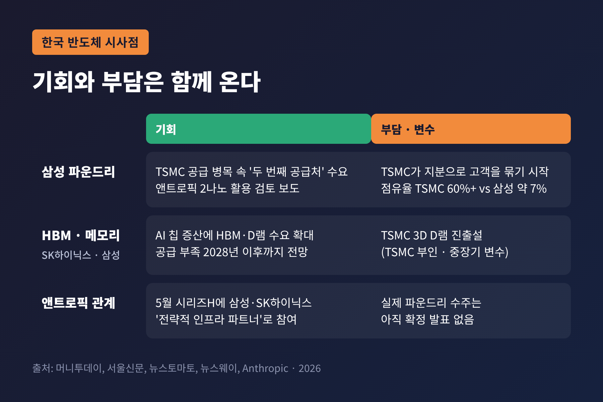

TSMC 오픈AI·앤트로픽 지분 투자, 파운드리가 고객사 주주가 된 이유

이번 글에서는 TSMC 이사회가 오픈AI와 앤트로픽 지분 투자를 승인한 일을 정리해 보겠습니다. 반도체를 "만들기만 하던" 회사가 왜 고객사의 주주가 되려 하는지, 그리고 한국 반도체에는 어떤 의미가 있는지까지 살펴봅니다.
3줄 요약
- TSMC 이사회가 11월 10일 앤트로픽 보통주와 오픈AI 우선주에 각각 최대 5억 달러, 합계 최대 10억 달러(약 1조3000억 원대) 투자를 승인했습니다.
- 같은 자리에서 약 409억 달러(약 54조5000억 원) 규모 자본예산, 5억 달러 투자회사 설립, 분기 배당 인상도 의결했습니다.
- AI 모델 개발사에 대한 TSMC의 첫 직접 지분 투자입니다. 수요 확보라는 실리와 '파운드리 중립성'에 대한 물음이 함께 따라옵니다.
■ 무슨 일이 있었나 — 이사회가 의결한 다섯 가지
TSMC 이사회는 대만 현지시간 11월 10일 다섯 가지 안건을 한꺼번에 처리했습니다. 대만 중앙통신(Focus Taiwan), 타이베이타임스, 그리고 로이터를 인용한 국내 보도가 같은 내용을 전합니다.
첫째, 앤트로픽 보통주를 최대 5억 달러어치 사들입니다. 가격은 따로 협상하지 않고 IPO 공모가를 그대로 따릅니다. 한국경제에 따르면 이 지분은 11월 19일 상장과 연계된 260억 달러 규모 사모 발행의 일부이고, 의결권이 없는 주식입니다.
둘째, 오픈AI 우선주를 최대 5억 달러어치 인수합니다. 한국경제는 주당 992달러에 최대 50만4000주, 예상 지분율은 0.04% 이하라고 전했습니다. 전환권과 잔여재산 우선분배권이 붙은 형태입니다.
셋째, 반도체와 관련 생태계에 전략적으로 투자할 투자회사를 세우고 최대 5억 달러를 출자합니다. TSMC가 투자 전문 조직을 만드는 것은 이번이 처음입니다.
넷째, 약 409억3000만 달러의 자본예산을 승인했습니다. 첨단 공정과 첨단 패키징 증설, 공장 건설, 설비 업그레이드, 2027년 연구개발비에 쓰이는 돈입니다. 원화로는 약 54조5500억 원으로, 국내에서 "55조 투자"로 보도된 바로 그 금액입니다.
다섯째, 3분기 현금배당을 주당 7대만달러에서 9대만달러로 올렸습니다. 분기 기준 사상 최대입니다.

한 가지는 짚고 넘어가겠습니다. 409억 달러는 '올해 설비투자 총액'이 아닙니다. 이사회가 이번에 집행을 승인한 예산 묶음입니다. TSMC의 2026년 연간 설비투자 전망은 10월 실적발표 때 제시한 600억~640억 달러에서 바뀌지 않았습니다.
■ 왜 중요한가 — '만드는 회사'가 '지분을 쥔 회사'로
TSMC는 오랫동안 스스로 칩을 설계하지 않고, 고객과 경쟁하지 않는다는 점을 강점으로 내세워 왔습니다. 애플이든 엔비디아든 AMD든, 설계도를 맡기면 똑같이 만들어 준다는 신뢰가 사업의 바탕이었습니다.
예전에는 공장과 기술만으로 충분했습니다. 지금은 고객사의 지분까지 들고 협상 테이블에 앉으려 합니다.
서울신문은 이번 결정을 TSMC의 'AI 모델 개발사에 대한 첫 직접 지분 투자'로 정리했습니다. 한국경제 역시 고객사 지분 확보가 "매우 이례적"이라는 평가를 전했습니다.
금액 자체는 TSMC 체급에 비하면 크지 않습니다. 3분기 순이익만 7630억 대만달러에 이르고, 10월 한 달 매출이 5869억 대만달러(약 23조8500억 원)로 월간 최대치를 다시 썼습니다. 10억 달러는 이 회사의 재무를 흔들 규모가 아닙니다.
그래서 중요한 것은 액수보다 방향입니다. 세계 최대 파운드리가 AI 생태계의 '공급자'에서 '이해관계자'로 한 걸음 옮겼다는 신호이기 때문입니다.
■ 왜 지금인가 — 자체 칩을 만들겠다는 두 고객
시점을 이해하려면 두 회사가 무엇을 준비하고 있는지 봐야 합니다.
오픈AI는 지난 6월 브로드컴과 함께 개발한 첫 자체 AI 추론 칩 '할라페뇨(Jalapeño)'를 공개했습니다. 엔비디아 GPU 의존도를 줄이려는 시도이고, 생산은 TSMC가 맡는 것으로 알려졌습니다.
앤트로픽은 8월에 클로드에 최적화된 반도체를 직접 설계할 팀을 꾸린다고 밝혔습니다. 지금은 엔비디아, AMD, 구글, 아마존의 칩을 섞어 쓰고 있습니다.
두 회사가 자체 칩을 만들기 시작하면, 그 칩을 찍어낼 곳은 사실상 최첨단 공정을 가진 소수의 파운드리뿐입니다. 지금은 엔비디아라는 '중간 고객'을 거쳐 TSMC와 연결돼 있지만, 머지않아 직접 고객이 될 수 있다는 뜻입니다.

공급이 빠듯하다는 사정도 겹칩니다. TSMC는 AI 반도체 수요가 "극도로 강력하다"며 수요가 생산능력을 웃돈다고 밝혀 왔습니다. 앤트로픽은 상장 신고서(S-1)의 위험 요인에서, TSMC가 때때로 수요를 맞추지 못해 충분한 칩을 제때 받지 못한 적이 있다고 적었습니다. 첨단 패키징 능력도 제약 요인으로 꼽았습니다.
여기서 양쪽의 이해가 맞물립니다. AI 기업은 귀한 생산능력을 안정적으로 얻고 싶고, TSMC는 장기 수요를 더 일찍, 더 정확히 내다보고 싶습니다. 금융 뉴스 매체 피니마이즈(Finimize)는 이 지분이 고객의 장기 로드맵을 읽는 '수요 가시성'을 높여, 과잉 증설 위험을 줄이는 데 도움이 될 수 있다고 분석했습니다.
엔비디아 쏠림을 줄이는 효과도 거론됩니다. 엔비디아는 지난해 애플을 제치고 TSMC 최대 고객이 된 것으로 알려졌습니다. 대만 언론은 이번 투자가 엔비디아 매출 의존도를 낮추고, 생산능력 배분과 가격 협상에서 유연성을 확보하려는 포석이라고 해석했습니다.
■ 쟁점 1 — 파운드리 중립성은 흔들리는가
가장 먼저 나오는 질문은 공정성입니다.
대만경제연구원(TIER)의 류페이전 연구원은 대만 국제방송(RTI) 인터뷰에서 장단점을 함께 짚었습니다. TSMC가 웨이퍼 파운드리를 넘어 AI 가치사슬에서 더 큰 몫을 가져갈 수 있다는 점은 장점입니다. 반면 두 회사가 자체 칩을 개발하는 상황에서, 기존 고객의 신뢰와 이미 매우 빠듯한 첨단 생산능력 배분의 공정성에 대한 우려가 생길 수 있다고 지적했습니다.
대만 경제일보는 한 걸음 더 나가, TSMC가 고객사에 투자한 만큼 생산능력 배분에 영향을 줄 수 있다고 봤습니다. 엔비디아·애플처럼 TSMC 물량에 사업을 기대는 기존 고객으로서는 신경 쓰일 대목입니다.
다만 반대쪽 근거도 분명합니다. 오픈AI 지분율은 0.04% 이하로 알려졌고, 앤트로픽 주식은 의결권이 없습니다. 경영에 관여할 수 있는 지분이 아니라는 점에서 "중립 원칙을 깼다"고 단정하기는 이릅니다. TSMC가 중립성 문제에 대해 따로 입장을 밝혔다는 보도는 확인되지 않았습니다.
결국 중립성은 지분율이 아니라 앞으로의 행동으로 판가름 날 문제입니다. 생산능력이 부족한 시기에 누구에게 먼저 물량을 주느냐가 시험대가 될 것입니다.
■ 쟁점 2 — AI '순환투자' 고리에 TSMC도 들어가나
두 번째 쟁점은 이른바 순환투자(circular deal)입니다. AI 인프라 기업이 AI 개발사에 투자하고, 그 돈이 다시 투자자의 칩과 클라우드 구매로 돌아오는 구조를 가리킵니다.
이 논란은 지난해 본격화했습니다. 엔비디아는 2025년 9월 오픈AI에 최대 1000억 달러 투자를 발표했고, 상당액이 엔비디아 GPU 사용료로 되돌아올 것이라는 지적이 나왔습니다. 오픈AI와 AMD의 6GW 공급 계약, 오라클과의 약 3000억 달러 컴퓨팅 계약도 같은 맥락에서 거론됐습니다.
이번 앤트로픽 사모 발행의 참여사 명단도 눈여겨볼 만합니다. TSMC, 구글, 엔비디아, AMD, 브로드컴, 마이크론, 마이크로소프트 — 모두 앤트로픽에 칩이나 클라우드를 공급하는 기업입니다. 한국경제에 따르면 구글과 엔비디아가 각각 100억 달러, AMD가 25억 달러, 브로드컴·마이크론·마이크로소프트가 각각 10억 달러를 넣습니다.

RTI 보도는 TSMC가 그동안 AI 분야에서 순환투자로 비칠 만한 거래를 하지 않았다고 짚었습니다. TSMC의 몫은 상대적으로 작고, 엔비디아처럼 투자금이 곧바로 자사 제품 구매로 이어지는 구조라고 보기도 어렵습니다. 그렇더라도 공급망 전체가 서로 지분으로 묶일수록, AI 수익화가 기대에 못 미칠 때 충격이 함께 번질 수 있다는 지적은 피하기 어렵습니다.
숫자를 보면 그 우려가 막연하지만은 않습니다. 아주경제가 인용한 블룸버그·월스트리트저널 보도에 따르면 오픈AI의 3분기 매출은 약 100억 달러로 늘었지만 영업손실도 109억 달러로 커졌습니다. 앤트로픽의 3분기 매출은 170억 달러로 47% 늘었으나, 2분기의 140% 이상 성장에서는 둔화했습니다. 앤트로픽이 IPO 서류에 적은 향후 AI 컴퓨팅·인프라 지출 약정은 8950억 달러에 이릅니다.

■ 한국 반도체에 주는 시사점
한국 기업에도 남의 일이 아닙니다. 흥미롭게도 비슷한 길은 이미 한국 기업이 먼저 걸었습니다.
삼성전자와 SK하이닉스는 마이크론과 함께 지난 5월 앤트로픽의 650억 달러 규모 시리즈H 투자에 '전략적 인프라 파트너'로 참여했습니다. 앤트로픽은 당시 이들이 메모리, 스토리지, 로직 칩 공급에 핵심 역할을 한다고 밝혔습니다. '로직 칩'이라는 표현 때문에, 메모리 3사 가운데 유일하게 파운드리를 가진 삼성전자의 수주 기대가 나왔습니다. 7월에는 앤트로픽이 삼성의 2나노 공정과 첨단 패키징 활용을 검토한다는 보도도 이어졌습니다. 다만 실제 수주가 확정됐다는 발표는 아직 없습니다.
TSMC가 직접 지분으로 고객을 묶기 시작했다는 점은 삼성 파운드리에 부담입니다. 세계 파운드리 시장에서 TSMC 점유율은 60%를 넘고, 삼성은 약 7% 수준으로 알려져 있습니다. 그러나 TSMC 공급이 계속 빠듯하다는 사실은 '두 번째 공급처'를 찾는 수요가 사라지지 않는다는 뜻이기도 합니다.
메모리는 사정이 조금 더 밝습니다. AI 가속기와 맞춤형 칩 생산이 늘면 HBM과 D램 수요도 함께 커지기 때문입니다. 머니투데이에 따르면 TSMC는 SK하이닉스의 HBM4 베이스다이를 생산하고, 삼성전자도 엔비디아 맞춤형 HBM의 베이스다이에 TSMC 공정을 쓸 계획입니다. 두 회사는 메모리 공급 부족이 2028년 이후까지 이어질 것으로 보고 있습니다.
변수도 하나 있습니다. 엔비디아가 TSMC에 차세대 3D D램 생산을 요청했다는 디인포메이션 보도가 나왔고, TSMC는 파운드리에 집중한다며 이를 부인했습니다. 업계는 이를 당장의 위협이 아닌 중장기 변수로 보고 있습니다.

■ 앞으로 볼 일정과 전망
가장 가까운 일정은 앤트로픽 상장입니다. 11월 18일 공모가가 확정되고, 19일 나스닥에서 'ANT'라는 티커로 거래를 시작할 예정입니다. 희망 공모가는 주당 70~78달러이며, 이 가격이 TSMC의 매입 단가가 됩니다.
오픈AI는 상장을 내년으로 미룬 상태입니다. 현재 라운드에서 목표치에 못 미치는 약 110억 달러를 먼저 확보한 것으로 전해졌습니다. TSMC가 사들이는 우선주의 가치는 오픈AI의 상장 시점과 실적에 따라 달라질 것입니다.
TSMC 내부 일정도 있습니다. 5억 달러짜리 투자회사가 어떤 기업에 첫 투자를 하는지, 409억 달러 예산이 첨단 패키징 증설에 얼마나 배정되는지가 관전 포인트입니다. 인상된 배당은 2027년 3월 11일 배당락을 거쳐 4월 8일 지급됩니다.
각국 규제 당국의 시선도 변수입니다. 류페이전 연구원은 국경을 넘는 지분 투자에 대한 심사가 강화될 수 있다고 내다봤습니다.
정리하면 이렇습니다. TSMC는 10억 달러로 큰 돈을 건 것이 아니라, 자신이 만들 칩의 '다음 주인'과 더 가까운 자리를 산 셈입니다. 대가로 치를 것은 돈보다 '모두에게 공평한 공장'이라는 평판일 수 있습니다.
"칩을 만드는 회사가 칩을 쓰는 회사의 주주가 됐다." 이 한 줄이 AI 반도체 지형을 어떻게 바꿀지는 앞으로 생산능력이 배분되는 방식을 지켜봐야 알 수 있을 것입니다. 한국 반도체가 이 흐름에서 구경꾼으로 남겠느냐고 묻는다면, 이미 앤트로픽 투자에 이름을 올린 만큼 그렇지는 않을 것이라고 답하겠습니다.
본 글은 정보 제공 목적이며 투자 권유가 아닙니다.
참고 자료
- Focus Taiwan(CNA), "TSMC to invest in Anthropic, OpenAI, raise quarterly dividend", 2026-11-11 — https://focustaiwan.tw/business/202611110009
- Taipei Times, "TSMC to invest in Anthropic, OpenAI, raise quarterly dividend", 2026-11-11 — https://www.taipeitimes.com/News/biz/archives/2026/11/11/2003867564
- 한국경제, "TSMC, 오픈AI·앤트로픽 10억弗 투자", 2026-11-11 — https://www.hankyung.com/article/2026111109811
- AI타임스, "TSMC, 자체 칩 개발 나선 오픈AI·앤트로픽에 최대 1.3조원 투자", 2026-11-11 — https://www.aitimes.com/news/articleView.html?idxno=217289
- 뉴데일리, "TSMC, 오픈AI·앤트로픽에 최대 10억달러 투자 … AI 동맹 확대", 2026-11-11 — https://www.newdaily.co.kr/site/data/html/2026/11/11/2026111100270.html
- 서울신문, "대만 TSMC 광폭행보…오픈AI·앤트로픽 10억 달러 투자에 D램 진출설도", 2026-11-11 — https://www.seoul.co.kr/news/economy/industry/2026/11/11/20261111500379
- 아주경제, "TSMC, 오픈AI·앤트로픽에 최대 10억달러 투자…AI 수익성 우려에도 승부수", 2026-11-11 — https://www.ajunews.com/view/20261111143606327
- 머니투데이(서플 게재), "최대 매출·55조 투자 나선 TSMC에 삼전닉스도 웃는다", 2026-11-11 — https://supple.kr/news/cmwbsu3sv8bkyal9py4f0yw63
- Radio Taiwan International, "TSMC's investment in AI companies to bring bigger value chain share, risks: Analyst", 2026-11-11 — https://www.rti.org.tw/en/news?uid=3&pid=1050842
- Tech Times, "TSMC Approves Up to $500 Million Anthropic IPO Stake as Anthropic Filing Flags TSMC Chip Supply Risk", 2026-11-10 — https://www.techtimes.com/articles/330397/20261110/tsmc-approves-500-million-anthropic-ipo-stake-anthropic-filing-flags-tsmc-chip-supply-risk.htm
- Finimize, "TSMC Wants A Piece Of The AI Models It Powers", 2026-11-10 — https://finimize.com/content/tsmc-wants-a-piece-of-the-ai-models-it-powers
- Anthropic, "Series H" 발표, 2026-05-28 — https://www.anthropic.com/news/series-h
- 뉴스토마토, "앤트로픽도 삼성 파운드리 '노크'…흔들리는 TSMC '아성'", 2026-07-03 — https://newstomato.com/ReadNews.aspx?no=1306085
- 뉴스웨이, "삼성전자, 앤트로픽 AI칩 수주…파운드리 흑자 전환 앞당긴다", 2026-05-29 — https://v.daum.net/v/20260529132702653
- 한국경제, "엔비디아 투자금으로 엔비디아칩 사는 오픈AI…'AI 순환거래' 논란", 2025-10-09 — https://www.hankyung.com/article/202510099232i
#TSMC #오픈AI #앤트로픽 #파운드리 #AI반도체 #순환투자 #삼성전자 #SK하이닉스